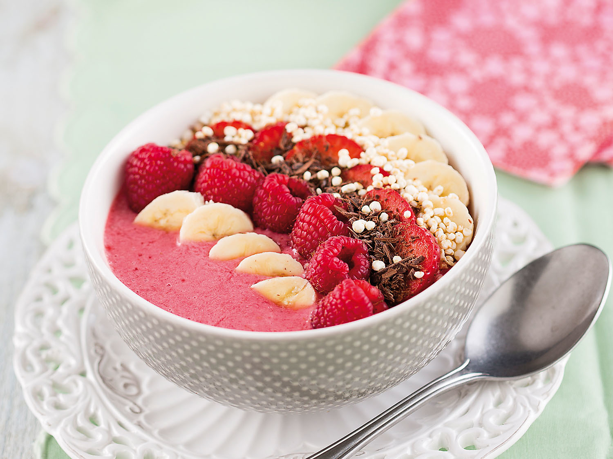

The Absolute Freshest Sweetest Most Delicious Smoothiebowl Recipe

The Recipe
This is the best recipe for the most meltiest deliciousest smoothiebowl you will ever find. Don't doubt it.
You will enjoy this recipe for the rest of your life. No smoothiebowl will ever top this recipe.
Dear Oh Dear. These are the most amazingest recipes ever EEEEEEEEEEEEE.
Ingredients
- 1 cup frozen mixed berries
- 1 small ripe banana (sliced and frozen)
- 2-3 tbsp light coconut milk
- 1 scoop plain or vanilla protein powder of choice (optional)
- 1 tbsp shredded toppings (coconut or otherwise)
- 1 tbsp chia seeds
- 1 tbsp hemp seeds
- granola
- fruit of choice
- any other fitting toppings
Steps
- Add frozen berries and banana to a blender and blend on low until small bits remain (see photo).
- Add a bit of coconut or almond milk and protein powder (optional), and blend on low again, scraping down sides as needed, until the mixture reaches a soft serve consistency (see photo).
- Scoop into 1-2 serving bowls (amount as original recipe is written // adjust if altering batch size) and top with desired toppings (optional). I prefer chia seeds, hemp seeds, and coconut, but strawberries, granola, and a nut or seed butter would be great here, too
- Best when fresh, though leftovers keep in the freezer for 1-2 weeks. Let thaw before enjoying.